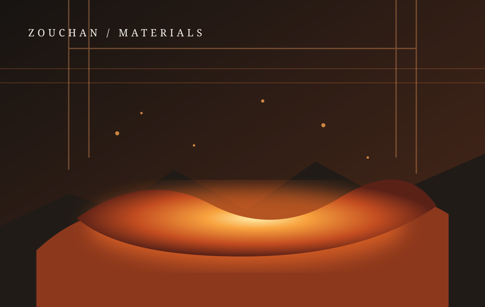

هادیها، کابلها، اتصالات و قطعات الکتریکی.
↗ COPPER · MATERIALS · FUTUREاز دل آتش،
صنعت مس، نگاهی فراتر از فلز
از دل آتش،
ارزش میآفرینیم.
ذوچن؛ نگاهی تخصصی به صنعت مس، تولید و توسعه آلیاژهای فلزی. از شناخت مواد تا انتخاب راهکار مناسب برای کاربردهای صنعتی.
0103
01 / MATERIAL SCIENCEمس؛ فلزی برای آینده
ذوچن / ZOUCHANمس و آلیاژهای مسیدانش مواد · مهندسی · کیفیتصنعتی برای فردا
01 — درباره ذوچنمس، فراتر از یک
مس، فراتر از یک
ماده اولیه
مس از مهمترین فلزات مهندسی در جهان امروز است؛ فلزی که رسانایی، شکلپذیری و قابلیت آلیاژسازی آن، نقشی کلیدی در زنجیرهای گسترده از صنایع ایفا میکند.
وبسایت ذوچن با هدف معرفی صنعت مس، محصولات پایه و خانواده آلیاژهای مسی طراحی شده است. در این فضا میتوانید با ویژگیهای مواد، کاربردهای صنعتی، مسیرهای عمومی تولید و مفاهیم کنترل کیفیت آشنا شوید.
فناوری در صنعت ذوب و فرآوری، تنها به تجهیزات محدود نمیشود؛ شناخت رفتار مواد، کنترل ترکیب شیمیایی، انتخاب فرایند مناسب و ارزیابی کیفیت، در کنار یکدیگر به تولید محصولی متناسب با نیاز کاربرد کمک میکنند.
رویکرد ذوچناطلاعات روشن، نگاه مهندسی و توجه به نیاز واقعی صنعت.

Cu29
02 — محصولات و مواد
جهان محصولات مسی
از مس پایه تا آلیاژهای مهندسی؛ خانوادههای متنوعی از مواد برای نیازهای متفاوت صنعتی.
ترکیب شیمیایی هر خانواده به گرید و استاندارد انتخابی وابسته است. فرمولهای درجشده، معرفی عمومی خانواده آلیاژی هستند و جایگزین برگه آنالیز یا مشخصات فنی گرید مشخص نیستند.
03 — حوزههای کاربرد
فلزی در قلب صنایع
ویژگیهای فیزیکی و شیمیایی مس، آن را به مادهای ارزشمند در طیف وسیعی از کاربردها تبدیل کرده است.
ژنراتورها، موتورها و سامانههای انتقال انرژی.
↗سیمکشی، موتورهای الکتریکی و مبدلهای حرارتی.
↗قطعات مقاوم به خوردگی در محیطهای دریایی.
↗مبدلهای حرارتی، لولهها و تجهیزات خنککاری.
↗تأسیسات، لولهکشی، پوششها و اجزای معماری.
↗تجهیزات فرایندی و اجزای منتخب صنعتی.
↗سامانههای خورشیدی، بادی و ذخیره انرژی.
↗اتصالات، کابلها و زیرساخت انتقال داده.
↗یاتاقانها، بوشها، چرخدندهها و قطعات مهندسی.
↗04 — شناخت آلیاژها
ترکیب درست، کارکرد بهتر
افزودن عناصر آلیاژی میتواند خواصی مانند استحکام، مقاومت به خوردگی، ماشینکاری یا رفتار سایشی مس را تغییر دهد.
Cu + Zn
برنج BRASS
خانوادهای از آلیاژهای مس و روی با دامنهای از رنگ، استحکام، شکلپذیری و قابلیت ماشینکاری. نوع و نسبت عناصر بر اساس گرید تعیین میشود.
- برنج معمولی و کارتریجی
- برنج دریایی و آلومینیومی
- برنج سربدار و سیلیکونی
Cu + Sn
برنز BRONZE
نامی برای گروهی از آلیاژهای مس که با قلع یا عناصر دیگری آلیاژ میشوند و در قطعات مقاوم به سایش، بارگذاری و خوردگی کاربرد دارند.
- برنز قلعدار و فسفر برنز
- برنز آلومینیومی و منگنزی
- برنز سربدار و سیلیکونی
Cu + X
آلیاژهای ویژه SPECIAL
گروههایی با خواص هدفمند برای شرایط کاری ویژه؛ انتخاب آنها باید با توجه به خواص موردنیاز و استاندارد گرید انجام شود.
- کوپرونیکل و مس–نیکل
- مس بریلیومی و کرومدار
- مس زیرکونیومی
05 — از ماده تا محصول
مسیر عمومی تولید
نمایی آموزشی از مراحل متداول در بخشی از زنجیره ذوب و فرآوری مس و آلیاژهای آن.
این مراحل، الگوی عمومی صنعت هستند و بهمنزله تأیید خط تولید، تجهیزات یا ترتیب عملیاتی مشخص در شرکت ذوچن نیستند.
01◈
آمادهسازی مواد
تأمین، تفکیک و آمادهسازی مواد اولیه متناسب با هدف تولید.
02⌕
آنالیز مواد
شناخت ترکیب اولیه و بررسی تناسب مواد با مشخصات موردنظر.
03♨
ذوب
ذوب مواد در تجهیزات متناسب با نوع فلز و فرایند انتخابی.
04Cu
تنظیم ترکیب
کنترل و اصلاح ترکیب شیمیایی بر اساس گرید هدف.
05▤
ریختهگری
شکلدهی مذاب در قالب یا سامانه ریختهگری مناسب.
06◫
سردسازی و شکلدهی
رسیدن به شرایط موردنیاز برای عملیات و ابعاد بعدی.
07✓
کنترل کیفیت
ارزیابی ویژگیهای شیمیایی، مکانیکی و ابعادی محصول.
08▣
آمادهسازی نهایی
بستهبندی، شناسایی و آمادهسازی برای تحویل.
06 — آزمایشگاه و کیفیتکیفیت، نتیجه
کیفیت، نتیجه
اندازهگیری است.
کنترل کیفیت در تولید فلزات و آلیاژها به مجموعهای از آزمونها و بررسیها وابسته است. انتخاب روش آزمون به نوع محصول، گرید و الزامات کاربرد بستگی دارد.
گفتوگو درباره نیاز فنی ↗01آنالیز ترکیب شیمیاییبررسی عناصر اصلی و فرعی آلیاژ
02خواص مکانیکیارزیابی سختی، کشش و رفتار مکانیکی
03کنترل ابعادی و سطحاندازهگیری ابعاد و بررسی عیوب ظاهری
04ردیابی محصولثبت شناسه، گرید و سوابق کنترل در صورت وجود سامانه مربوطه
07 — تازههای صنعت
اخبار و رویدادها
تمام خبرهای این بخش محتوای نمونه و آموزشی هستند و خبر واقعی شرکت یا گزارش رویداد برگزارشده محسوب نمیشوند.
08 — نشریه دیجیتال
نشریه صنعت مس ذوچن
قالبی برای انتشار دیدگاهها، پروندههای فنی و مرور تحولات صنعت مس.
شمارهها و فایلهای این بخش نمونه نمایشی هستند؛ پس از آمادهسازی محتوای تحریریه میتوان آنها را جایگزین کرد.
09 — دانشنامه مواد
مقالات تخصصی
مطالبی برای آشنایی بهتر با رفتار مس و آلیاژهای آن و تصمیمگیری آگاهانهتر در انتخاب مواد.
10 — صنعت و آیندهتوسعه صنعتی،
توسعه صنعتی،
مسئولانهتر.
بازیافتپذیری مس، مدیریت انرژی، کاهش ضایعات و توجه به ایمنی از موضوعات مهم در حرکت صنعت فلزات به سوی توسعه پایدار هستند. تحقق هر برنامه در سطح یک شرکت نیازمند هدفگذاری، اجرا و گزارشدهی قابل ارزیابی است.
01بازیافت و چرخه موادبازگشت قراضه مسی به چرخه تولید با کنترل کیفیت مناسب
02بهرهوری انرژیپایش مصرف و بهینهسازی فرایندهای انرژیبر
03مدیریت پسماندتفکیک، نگهداری و مدیریت اصولی پسماندهای صنعتی
04ایمنی و محیط زیستتوجه به آموزش، پیشگیری و الزامات محیط کار
11 — گالری
جزئیات دنیای مس
تصویرسازیهای اختصاصی و آفلاین این نسخه، جایگزین موقت تصاویر مستند کارخانه و محصولات هستند.
12 — پاسخ به پرسشها
پرسشهای متداول
پاسخهایی کوتاه برای شروع شناخت بهتر مس و آلیاژهای آن.
13 — ارتباط با ذوچنبرای گفتوگو
برای گفتوگو
آمادهایم.
برای دریافت اطلاعات بیشتر درباره خانواده محصولات، مشخصات فنی یا همکاری، پیام خود را از طریق فرم نمایشی زیر ثبت کنید.
✉
ایمیلاطلاعات ایمیل در انتظار تکمیل
⌖
نشانینشانی رسمی شرکت در انتظار تکمیل
☎
تلفنشماره تماس در انتظار تکمیل
⌖موقعیت مکانی شرکتپس از دریافت نشانی دقیق، نقشه در این بخش قرار میگیرد.